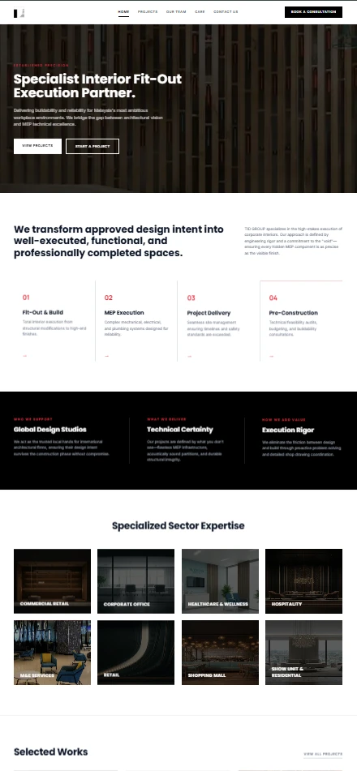

Services
Marketing thinking, creative content and execution across channels. Eight individual services, connected by the needs of your brand.
Business Consulting
Marketing direction grounded in your business.
Business understanding and strategic marketing planning focused on relevant brand goals and growth opportunities.
What we provide
- Business understanding
- Strategic marketing planning
- Selection of relevant marketing strategies
Media Production
Visual content that puts the brand story to work.
Photography and video for brands, campaigns, products and events, from short-form content to commercial shoots and editing.
What we provide
- Professional photography
- Product and lifestyle photography
- Event photography
- Short-form video production
- Commercial videography
- Post-production editing
Platforms
Instagram · TikTok · Facebook


AI-Enhanced Content Production
Creative tools, directed by people.
AI supports ideation, visual development, storyboard creation, video concepts and selected production tasks. The creative team leads judgment and final review.
What we provide
- Creative concept development
- Storyboard and visual direction
- AI image generation and video scene creation
- Script and voiceover drafting
- Pre-production visualization

Website & Digital Solutions
A useful digital home for the business.
Website structure, user experience, visual design and business functionality, with mobile-friendly presentation.
What we provide
- Company websites
- Landing pages
- E-commerce websites
- Website redesign
- UI/UX planning
- Digital system support
- Mobile-friendly design


Event Management
Brand experiences made tangible.
From concept planning to on-ground management, ShowMakers supports physical experiences that bring brands and audiences together.
What we provide
- Concept planning
- Production coordination
- Venue setup and stage design
- Logistics
- Talent coordination
- On-ground management
Formats
Corporate events · Product launches · Brand activations · Pop-up events · Music and entertainment events · Sports events · Roadshows · Exhibitions
SEO & SEM
Search visibility, organic and paid.
Improve online discoverability through search engine optimization and paid search campaign management.
What we provide
- On-page SEO
- Technical SEO
- Keyword planning
- Website content optimization
- Google Ads management
- Search campaign monitoring
- Performance review
Platforms
Google Ads
Influencer Marketing
The right creators for the brand conversation.
Support suitable influencer and content-creator collaborations through selection, briefing, content direction and coordination.
What we provide
- Influencer identification
- KOL shortlisting
- Campaign briefing
- Content direction
- Posting coordination
- Performance tracking
- Campaign reporting
Social Media Marketing
A consistent brand presence across social channels.
Audience-focused content and communication, supported by planning, platform management and advertising.
What we provide
Facebook
Ad management, interactive content, community engagement and conversion analysis.
Instagram
Visual storytelling, content strategy and management, and influencer collaborations.
XiaoHongShu
Localized content, platform-specific communication and influencer collaborations.
TikTok
Trend-aware content strategy, short-form video, paid campaigns and influencer collaborations.